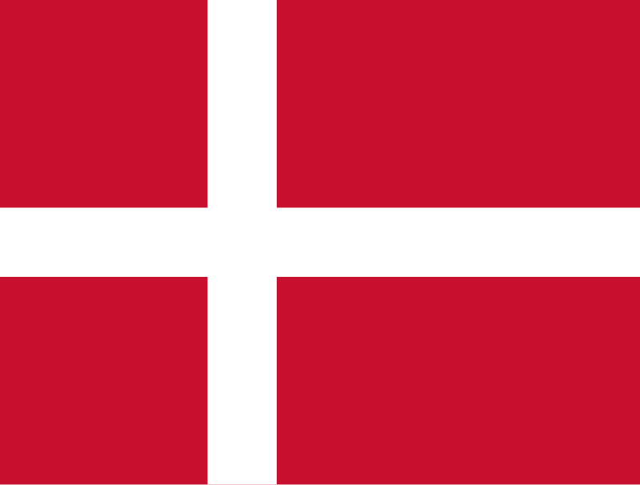

About Me
My name is Brandon Cazorla Costa, I am 23 years old, i was born in Buenos Aires, Argentina but i live in Denmark. I am currently working as Engineer in Computer Science. Also i have three dogs Rex, Railey and Jack they are my love!
Copenhague, Denmark

Official Flag of Denmark
Copenhagen is the capital and largest city of Denmark. It is located on the island of Zealand and partly on Amager. The city is a cultural and economic center, known for its architecture, sustainable lifestyle, and bicycle-friendly transportation system. It is also famous for its high quality of life.